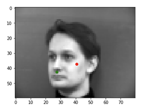
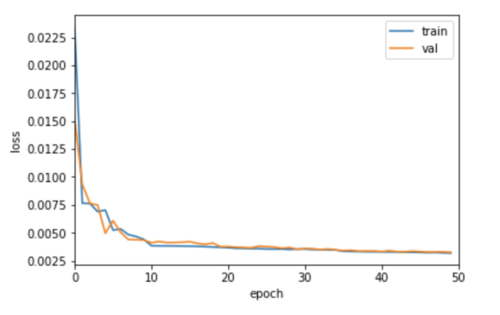
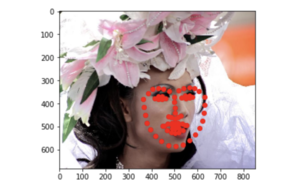
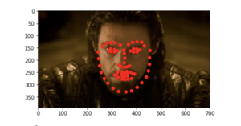

Here are some images visualized with ground truth keypoints:
A neural network (NoseNet) was developed to detect these nose keypoints. NoseNet uses 4 convolutional layers followed by two fully connected layers. The activation function used is ReLU. The loss metric used is MSE. Here is the averaged loss plotted per epoch. Blue is training loss, Orange is validation loss.
The final training loss is 0.00380 and validation loss is 0.00505.
Here are some cases where the nose detection was successful. Red is predicted, green is ground truth:
Here are some cases where NoseNet wasn't as successful. Red is predicted, green is ground truth:

Face angle and variable lighting conditions played a factor into the accuracy of the network. Faces that were tilted far to the right or left often had their nose points in the wrong place. Also strange specks of light on the subjects' faces may cause NoseNet to consistently identify these areas as noses.
Here are some sampled images with their ground truth facial keypoints:
As we see above, there are many more points to predict. To help with the training process, some augmentation techniques were to sample facial angles of 3,4,6 (left/right tilted faces / wildcard angles) 4x more often so the network has more opportunities to learn from angled faces. Vertical and horizontal shifting was implemented as well using np.roll (which can be seen in some images above).
The architecture consists of 5 convolutional layers of increasing dimensions and two fully connected layers. The first three layers have kernel sizes of 3 and last two layers have kernel sizes of 5. The activation function used is ReLU.
The training process is performed for 30 epochs with a batch size of 8. The learning rate is initially set to 0.0001 and is reduced at 20 epochs to 0.00001.
Here is the plotted training/validation loss per epoch. The blue is training loss and orange is validation loss. The training loss is 0.00373 and validation loss is 0.00479.
Here are two cases where the facial keypoints are detected correctly. Red is predicted and green is ground truth:
Here are two cases where the facial keypoints are not detected correctly. Red is predicted and green is ground truth. The accuracy of these cases are likely reduced due to color contrast inconsistencies and extreme facial angles which may have occluded the keypoints.
Finally, we visualize the learned filters:
First Layer
Here are some sampled images with the ground truth keypoints:
The network architecture is the same as that of ResNet18, with the size of the input and output layers adjusted to accommodate the input and output images. The input size is equal to batch size, which is 6, and the output size is equal to batch size multiplied by 136, which is 816 for a batch size of 6.
Training was performed over 50 epochs, with a batch size of 6 and initial learning rate of 0.001 which is changed to 0.0001 at 10 epochs. This learning rate adjustment was helpful for training.
Here is a plot of the training and validation loss. Blue is training loss and orange is validation loss. The training loss is 0.00318 and the validation loss is 0.00325.

Here are some predictions from the test set. It appears the predictions have the right general idea of where the face is, but struggles to fit to faces with different angles. Also the eye points seem to be confusedd with the eyebrows for some reason. I suspect that this may be a data ingestion issue. I got a MAE of approximately 24.155 on the Kaggle challenge.



Here are some results from my photo collection. The net seems to work well on images which are less noisy, and have square bounding boxes which reveal as much as their face as possible. Sources of failure seem to be attributed to pictures of people without glasses, and also where the faces are not centered in the image. Vertical images seem to also be a struggle, so this may point towards a scaling issue (scaling is performed with the bounding box width, but bounding boxes are square).